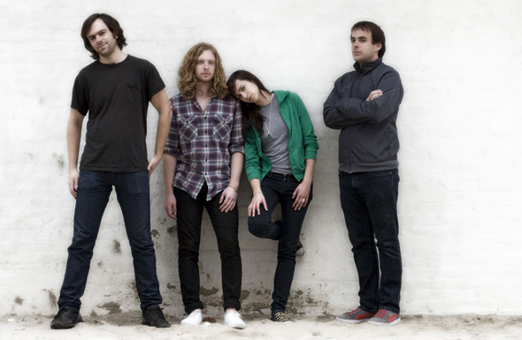

ACTS & PERFORMANCES
ACTS & PERFORMANCES
There will be four main acts playing at Ecofest. Each of the acts on the night are very passionate about the environment and saving it for future generations. The acts playing are:
> Everyone's Environment: a local four peice, indie band that hope to spread the message of global warming and hope to change peoples opinions through music.
Scheduled to play at 5pm to 7pm.
> Solar Drum: a pop band with the dream to play music to the world andd love what they do.
Scheduled to play at 7:30pm to 9:30pm
> Green Gizmos: a children's six peice act who use puppets and songs to engage children and to make a calm and happy environment.
Scheduled to play at 10pm to 12pm
> DJ JOHN ALFRED! our star of the show, here to entertain and have a good time.
Scheduled to play at 12:30am to 2:30am
DJ John Alfred
DJ John Alfred is the star of the festival nd has agreed to come and play for us as he is a supporter about our message and hopes to spread the message and have fun doing it. We personally chose him to play at the festival as a big name can bring more attention to our message and will help spread awareness.
Green Gizmos

We have invited the green gizmos to ensure a happy and calm envionment for the children. This band is well known for there fun and educational songs to help children learn and have fun at the same time. With this band we can ensure the whole family will have fun.
Solar Drum
We invited solar drum because they simply want to have a goodtime and share their music to the world. They are here to show people what they have got and to support the festival and to help clean the environment.
Everyones Environment

Everyones environment wanted to be at the festival because it is everything they want to support.They will be playing to educate people about global warming and how we can help the planet get better. We have worked with them before and can say that they dont disapoint when it comes to the music.
Webpage by: James Hall